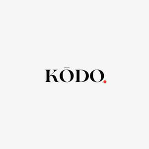

Trade Mark Journal No.2025/017 25 April 2025
UK00004187808 11 April 2025 (7,9,11,35,37,42,43)

- Class 7
- Industrial robots; robotic food preparation machines; automated cooking apparatus; robotic arms; automated food processors; machines and robotic mechanisms for food and beverage preparation; electromechanical food preparation machines.
- Class 9
- Artificial intelligence software for robotic cooking systems; computer hardware and software for controlling robotic kitchen equipment; computer vision systems for food preparation automation; interactive displays and interfaces for robotic kitchen control; sensors and electronic controls for robotic kitchen automation.
- Class 11
- Robotic cooking appliances; automatic cooking installations; automated heating apparatus for cooking; electronically controlled cooking ovens; commercial automated ovens; automated kitchen equipment.
- Class 35
- Retail services connected with the sale of automated kitchen appliances, robotics, and food preparation systems; franchising services related to robotic kitchen and foodservice solutions; business advisory and consultancy services relating to robotic food service operations.
- Class 37
- Installation, servicing, repair, and maintenance of robotic kitchen apparatus, automated cooking equipment, and food preparation systems; technical support services relating to robotic kitchen equipment.
- Class 42
- Design, development, and maintenance of software and technology for robotic kitchens; technological consultancy in the field of robotics and artificial intelligence; software-as-a-service (SaaS) featuring software for managing automated kitchen operations; research and development in robotics-driven food preparation.
- Class 43
- Provision of food and beverage services via robotic or automated kitchens; catering services utilizing robotic cooking apparatus; automated restaurant and café services; robotic food preparation and serving services; foodservice and takeaway services operated by automated and robotic equipment.
Kashmir Singh
Representative: Baljit Chohan